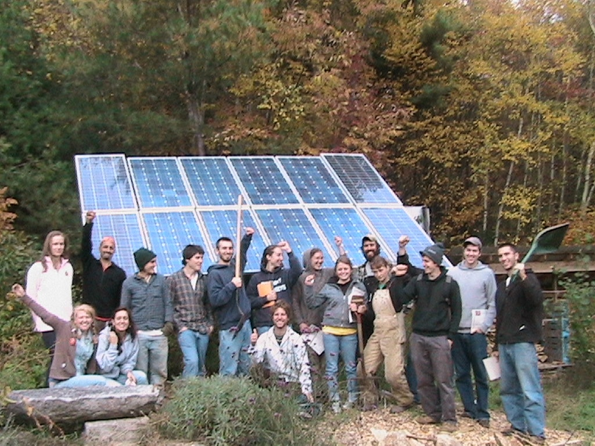

Our self-serve farmstand at 165 Chestnut Hill Road Orange will re-open in early April. Thank you for your patronage, it means a lot. We were recently awarded a grant from the Harold Grinspoon Foundation Local Farm program that enables the purchase of a larger, upright refrigerator for our solar-powered farmstand! Can’t wait to get and install it and we think you will love it too. Did you know there is a soil microbe that creates happiness? Are you interested in volunteering on our no-till human powered farm on Mondays and/or Tuesdays through the spring, summer, and fall? Grow through the seasons each week, as you experience a diversity of approaches to no-till farming for life! Volunteers may come either day, but consistency and commitment is important. We work hard with great conversation and offer you learning, lunch and some veggies to take home. Call Ricky at 978-544-7564 to talk about volunteering.
Seeds of Solidarity Farm was initiated in 1996, on land in the middle of the forest that had not been cultivated for many years, and the original inhabitants of the region being the Wampanoag, Nipmuc, and Pequoit people. A conservation restriction on our 30 acres ensures the land will always be used for agriculture, education, and wildlife habitat. With nature as teacher, the land has been transformed into fertile fields and hosts 5 solar hoophouses brimming with our signature greens, fruit and perennial crops, garlic and sacred, traditional crops such as Hopi blue and Narraganset flour corn. The tapestry of our site includes energy efficient and off the grid home, office, and farm outbuildings, including Solidarity Handworks, a solar powered farmstand, and celebration art and words of inspiration along the paths. GH with Class With the growth in people wanting local food, we ask, ‘How can more people participate not only as consumers, but producers?’ To build local food self-reliance, we need accessible, affordable and yes, fun practices that mimic nature, help decentralize food production and engage more people in cultivating the earth in order to Grow Food Everywhere. We use cardboard on marginal land to foster worms, microbes and mychorrizal fungi that decompose the cardboard and build a fertile soil ecosystem. In addition to an increase in worm castings (poop), using cardboard as mulch helps balance moisture, keep weeds down, and create no-till carbon sinks that retain rather than release CO2 into the atmosphere. Cardboard- a waste product available in most communities– is key to growing gardens on lawns, lots, school yards, municipal buildings for opening up and improving plots of land. It is an honor to grow food in solidarity with small farmers around the world, and those everywhere helping to feed the people.
| Operating Hours | |
|---|---|
| Monday | 9-6 |
| Tuesday | 9-6 |
| Wednesday | 9-6 |
| Thursday | 9-6 |
| Friday | 9-6 |
| Saturday | Closed |
| Sunday | Closed |
(555) 555-5555
contact@seedsofsolidarity.com
©2017 seedsofsolidarity.com